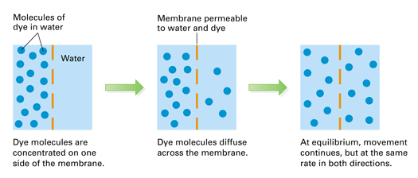
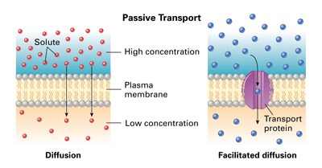
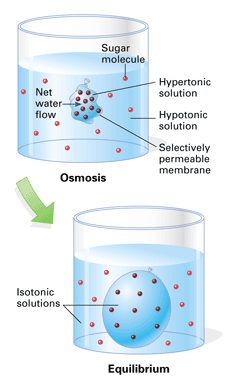
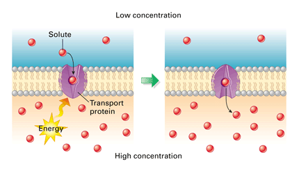
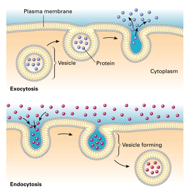

Objectives
- Relate diffusion and equilibrium.
- Describe how passive transport occurs.
- Relate osmosis to solute concentration.
- Explain how active transport differs from passive transport.
- Describe how large molecules move across a membrane.
Key Terms
Materials such as water, nutrients, dissolved gases, ions, and wastes must constantly move in two-way traffic across a cell's plasma membrane. Materials also must move across membranes within the cell. Cellular membranes function like gatekeepers, letting some molecules through but not others. And, while certain molecules pass freely through the "gates," others move only when the cell expends energy.
Diffusion
Molecules in a fluid are constantly in motion, colliding and bouncing as they spread out into the available space. One result of this motion is diffusion, the net movement of the particles of a substance from where they are more concentrated to where they are less concentrated.
Suppose there is a container of water in which a membrane separates pure water from a solution of dye and water. This membrane happens to be permeable to both the dye and water molecules—that is, the molecules can pass through the membrane freely (Figure 6-11). As the molecules of water and dye move randomly, the dye eventually diffuses across the membrane until the concentration of dye—the ratio of dye to water—on each side is the same. At this point, the number of dye molecules moving in one direction is equal to the number moving in the other direction, and the system is said to be in equilibrium, or balance.
|  |
Figure 6-11
Dye molecules diffuse across a membrane. At equilibrium, the concentration of dye is the same throughout the container. |
Passive Transport
Cellular membranes are barriers to the diffusion of some substances. A selectively permeable membrane allows some substances to cross the membrane more easily than others and blocks the passage of some substances altogether. (Think of a window screen that lets a breeze through but blocks the entry of mosquitoes.) In a typical cell, a few molecules (primarily oxygen and carbon dioxide) diffuse freely through the plasma membrane (Figure 6-12, left). Water also diffuses through the membrane, but mostly through protein channels. Other molecules pass less easily or only under specific conditions. Diffusion across a membrane is called passive transport because no energy is expended by the cell in the process. Only the random motion of the molecules is required to move them across the membrane.
|  |
Figure 6-12
Both diffusion and facilitated diffusion are forms of passive transport, as neither process requires the cell to expend energy. In facilitated diffusion, solute particles pass through a channel in a transport protein. |
Though small molecules generally pass more readily by passive transport than large molecules, most small molecules have restricted access. For example, sugars do not pass easily through the hydrophobic region of the plasma membrane. The traffic of such substances can only occur by way of transport proteins (Figure 6-12, right). In this process, known as facilitated diffusion, transport proteins provide a pathway for certain molecules to pass. (The word facilitate means "to help.") Specific proteins allow the passive transport of different substances. In this way, substances including some ions and small polar molecules, such as water and sugars, diffuse into or out of the cell.
Osmosis
The passive transport of water across a selectively permeable membrane is called osmosis (ahs MOH sis). Consider a sealed bag of concentrated sugar water placed in a container of less-concentrated sugar water. Suppose that water can pass through the bag (the membrane) but the sugar molecules cannot. The solution with a higher concentration of solute is said to be hypertonic (hyper means "above"). The solution with the lower solute concentration is said to be hypotonic (hypo means "below"). Think now, which solution has the higher concentration of water? By having less solute, the hypotonic solution has the higher water concentration. What will happen?
As a result of osmosis, water from the container (hypotonic solution) will diffuse across the membrane to the inside of the bag (hypertonic solution). The sugar molecules, however, cannot cross the membrane. In time, the volume of water increases inside the bag. If the volume of the bag is large enough, the concentration of sugar will become the same in the water on either side of the membrane. Solutions in which the concentrations of solute are equal are said to be isotonic (isos means "equal").
|  |
Figure 6-13
A selectively permeable membrane (the bag) separates two solutions of different sugar concentrations. Sugar molecules cannot pass through the membrane. |
Water Balance in Animal Cells Although the solution in Figure 6-13 became isotonic, the bag got bigger as it took on water. What happens to an animal cell in a hypotonic solution? The cell gains water, swells, and may even pop like an overfilled balloon. A hypertonic environment is also harsh on an animal cell. The cell loses water, shrivels, and may die.
Animals living in aquatic environments may encounter conditions that are not isotonic with their body tissues. These animals depend on mechanisms that make up for the gain or loss of water that results from osmosis. For example, the body of a freshwater fish constantly gains water from its hypotonic environment. One function of the fish's gills and kidneys is to prevent an excessive buildup of water in the body.
Water Balance in Plant Cells Water balance problems are somewhat different for plant cells because of their strong cell walls. A plant cell is firm and healthiest in a hypotonic environment—when bathed by rainwater, for example. The cell becomes firm as a result of the net flow of water inward. Although the cell wall expands a bit, it applies pressure that prevents the cell from taking in too much water and bursting, as an animal cell would. In contrast, a plant cell in an isotonic environment has no net inward flow of water. It becomes limp. Non-woody plants, such as most houseplants, wilt in this situation. In a hypertonic environment, a plant cell is no better off than an animal cell. As a plant cell loses water, it shrivels, and its plasma membrane pulls away from the cell wall. This situation usually kills the cell.
Active Transport
When a cell expends energy to move molecules or ions across a membrane, the process is known as active transport. During active transport, a specific transport protein pumps a solute across a membrane, usually in the opposite direction to the way it travels in diffusion (Figure 6-16). This action requires chemical energy supplied primarily by the mitochondria, which you will read more about in Concept 6.5.
|  |
Figure 6-16
Like an enzyme, a transport protein recognizes a specific solute, molecule or ion. During active transport, the protein uses energy, usually moving the solute in a direction from lesser concentration to greater concentration. |
Active transport plays a part in maintaining the cell's chemical environment. For example, an animal cell has a much higher concentration of potassium ions (K+) and a much lower concentration of sodium ions (Na+) than its fluid surroundings. The plasma membrane helps maintain these differences by pumping K+ ions into the cell and Na+ ions out of the cell. This particular case of active transport is central to how your nerve cells work, as you'll learn in Chapter 28.
|  |
Figure 6-17
Exocytosis (above left) expels molecules from the cell that are too large to pass through the plasma membrane. Endocytosis (below left) brings large molecules into the cell and packages them in vesicles. |
Transport of Large Molecules
So far you've seen how water and small particles of solutes enter and leave a cell by moving through the plasma membrane. The process is different for large particles. Their movement depends on being packaged in vesicles (VES i kuhlz), which are small membrane sacs that specialize in moving products into, out of, and within a cell (Figure 6-17). For example, in exporting protein products from a cell, a vesicle containing the proteins fuses with the plasma membrane and spills its contents outside the cell—a process called exocytosis. The reverse process, endocytosis, takes material into the cell within vesicles that bud inward from the plasma membrane. Larger membrane sacs are also formed by endocytosis when food particles are ingested.
Concept Check 6.3
1. What is diffusion?
2. What role does a cellular membrane play in passive transport?
3. Distinguish between hypertonic, hypotonic, and isotonic solutions, and give an example of how each affects an animal cell.
4. What role does active transport play in cell function?
5. How do vesicles transport large molecules out of a cell?